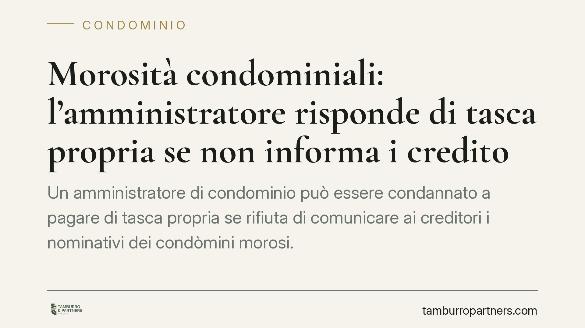

Morosità condominiali: l'amministratore risponde di tasca propria se non informa i creditori
Un amministratore di condominio può essere condannato a pagare di tasca propria se rifiuta di comunicare ai creditori i nominativi dei condòmini morosi. Lo ribadisce il Tribunale di Torre Annunziata con sentenza del 29 maggio 2026, applicando anche la sanzione giornaliera prevista per chi non rispetta gli obblighi di trasparenza. Una decisione che pesa sulla gestione ordinaria e sulla responsabilità personale del professionista.

Il caso
Un creditore del condominio si rivolge all'amministratore per ottenere i nominativi dei condòmini che non hanno versato la loro quota. L'obiettivo è agire direttamente contro i debitori effettivi, evitando di percorrere strade più lunghe. L'amministratore, però, non fornisce l'informazione.
Il Tribunale di Torre Annunziata, Sezione civile II, con la sentenza del 29 maggio 2026, ha ritenuto illegittimo questo silenzio. Ha condannato l'amministratore a rilasciare i dati e ha aggiunto una sanzione economica che matura per ogni giorno di ritardo, fino all'adempimento.
Inquadramento normativo
Il punto di partenza è l'art. 63 delle disposizioni di attuazione del Codice civile. La norma stabilisce che i creditori, prima di agire contro i condòmini in regola con i pagamenti, devono escutere quelli morosi. Per farlo, hanno bisogno di conoscere chi sono. Ecco perché lo stesso articolo impone all'amministratore di comunicare ai creditori che ne facciano richiesta i dati dei condòmini in arretrato.
Si tratta di un obbligo strumentale al cosiddetto "beneficio della preventiva escussione": i condòmini in regola rispondono dei debiti condominiali solo in via sussidiaria, cioè dopo che i creditori hanno tentato senza successo di rivalersi sui morosi. Se l'amministratore non fornisce i nominativi, questo meccanismo si blocca.
A rafforzare il quadro interviene l'art. 1130 c.c., che elenca le attribuzioni dell'amministratore, tra cui la corretta tenuta della contabilità e la gestione dei rapporti verso i terzi. Il mancato rispetto di questi doveri può fondare una responsabilità personale.
Lo strumento con cui il Tribunale ha reso effettiva la condanna è l'art. 614-bis del Codice di procedura civile. Questa disposizione consente al giudice di fissare una somma di denaro dovuta per ogni giorno di ritardo (o per ogni violazione) nell'esecuzione di un obbligo di fare o non fare. È una misura di coercizione indiretta: serve a spingere l'obbligato ad adempiere, colpendolo economicamente finché resta inerte.
Cosa cambia per l'amministratore
La decisione conferma un principio già presente nel sistema, ma ne rende palpabili le conseguenze. La comunicazione dei morosi non è una cortesia lasciata alla discrezionalità dell'amministratore: è un obbligo di legge azionabile in giudizio.
Due i profili di rischio.
Il primo è la responsabilità personale. Se il rifiuto di informare provoca un danno al creditore - per esempio impedendogli di recuperare il credito nei tempi utili - l'amministratore può essere chiamato a rispondere con il proprio patrimonio, non con quello del condominio.
Il secondo è la sanzione ex art. 614-bis c.p.c. La somma giornaliera si cumula finché l'amministratore non rilascia i dati. Più dura l'inerzia, più cresce l'esborso. E anche in questo caso l'importo grava sull'amministratore in prima persona.
Attenzione anche al versante privacy: comunicare i nominativi dei morosi ai creditori legittimati non viola la normativa sui dati personali, perché la comunicazione è prevista dalla legge e circoscritta a chi vanta un titolo. Diverso è divulgare gli stessi dati in modo generalizzato, ad esempio affiggendoli in bacheca: lì il rischio di violazione resta concreto.
Cosa fare in concreto
- Rispondete per iscritto alle richieste dei creditori legittimati, indicando i nominativi dei morosi e l'importo dovuto da ciascuno, entro un termine ragionevole.
- Tenete aggiornato il registro di contabilità e lo stato dei pagamenti: senza dati precisi non è possibile adempiere correttamente all'obbligo informativo.
- Circoscrivete la comunicazione ai soli creditori che ne facciano richiesta e vantino un titolo, evitando divulgazioni generalizzate che espongono a contestazioni in materia di dati personali.
- Documentate ogni passaggio: data della richiesta, risposta fornita, dati trasmessi. In caso di contenzioso, la prova dell'adempimento tempestivo è la migliore difesa.
- In caso di dubbio sulla legittimazione del richiedente o sul perimetro dei dati da comunicare, consigliamo di acquisire un parere prima di rispondere, per evitare sia il rifiuto sanzionabile sia la comunicazione eccessiva.
---
*Contributo informativo a cura di Tamburro & Partners - Avv. Giuseppe Tamburro. Non costituisce parere legale.*
Ogni condominio ha una storia a sé.
Se gestisci un'amministrazione e vuoi un confronto su una specifica questione condominiale, scrivi allo studio. Ti rispondiamo entro un giorno lavorativo.